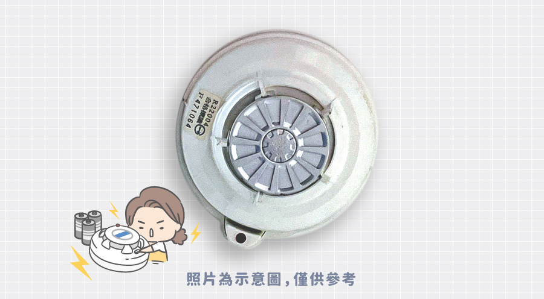
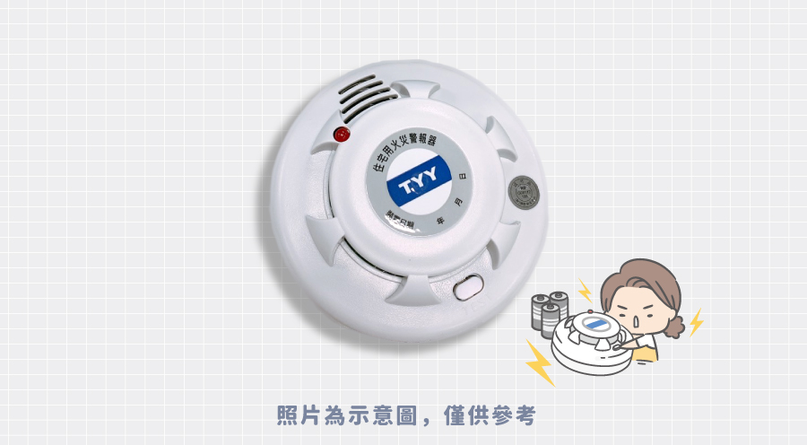
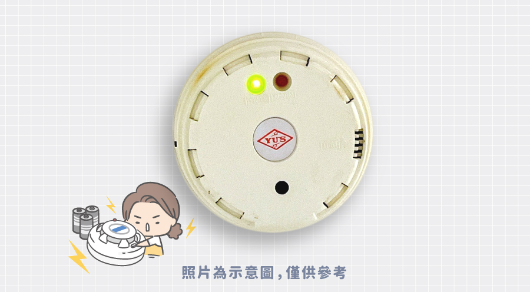
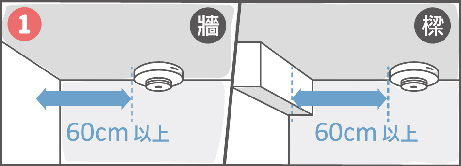
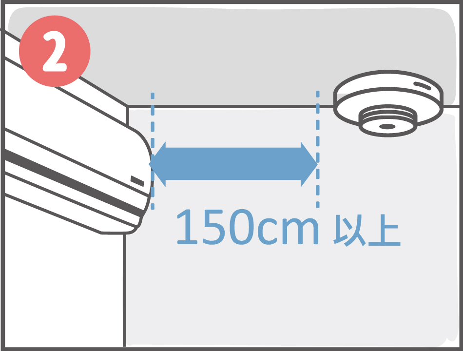
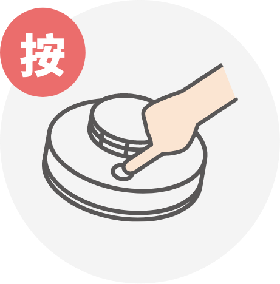
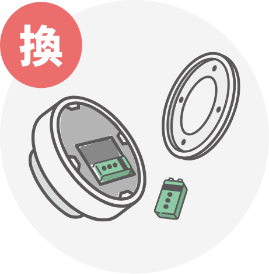

火災感知器介紹
家裡天花板上裝的是什麼? 傻傻分不清楚?
-
火警自動警報系統
集合住宅及有管委會管理的大樓，室內應皆已安裝相關探測器，並依格局坪數安裝適宜數量與位置。
-
住宅用火災警報器
簡稱:住警器未設置火警自動警報設備之住宅場所皆應自主裝設住警器(透天、公寓)。
-
瓦斯偵測器
建議裝置於廚房天花板。
集合住宅及有管委會管理的大樓，室內應皆已安裝相關探測器，並依格局坪數安裝適宜數量與位置。
未設置火警自動警報設備之住宅場所皆應自主裝設住警器(透天、公寓)。
建議裝置於廚房天花板。
住警器特性
-
免配電線
只須裝上電池不須額外配線。
-
易於檢測
每月定期按鈕測試。
-
便於安裝
依照說明書用釘或雙面膠黏在天花板。
安裝位置及注意事項
建議安裝位置
住警器種類
-
偵煙式
周圍空氣中含煙濃度達某一限度時，發出警報聲。
-
定溫式
周圍溫度到一定溫度以上時，發出警報聲，適用於廚房。
安裝注意事項
-

裝設於距離牆壁或樑等60公分之處。
-

天花板裝設出風口時，應距離出風口1.5公尺以上之處。
-

設置於牆面上時，距離天花板或樓板下方15公分以上50公分以下。
電力測試與保養
-

測試按鈕
-
檢查功能
-

更換電池
-
定期檢測
若電池沒電時，住警器會發出短促嗶嗶聲，請更換電池或整顆汰換。
大賣場、量販店、消防安全器材商店、安全購物網站、消防安全器材商店。
購買時注意
要注意產品是否張貼"內政部消防署個別認可合格標示"。
常見問題
Q家裡住警器鈴響誤報，怎麼辦?
-
裝設位置錯誤
誤將偵煙式住警器裝設在廚房，廚房或容易有煙霧之處應裝定溫式。
-
灰塵堆積
灰塵蜘蛛絲堆積造成誤報，定期清潔即可。
-
住警器沒電
符合內政部消防署認可基準規定的住警器，電力可達三年，而市面上標示鋰電池則可使用十年。發現沒電則更換電池，或整顆汰換喔!